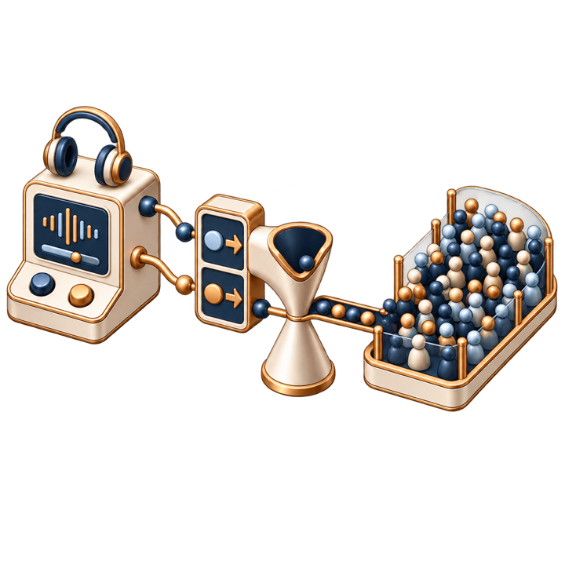

Survey bias
Traditional surveys ask people to declare their opinions. Social desirability bias means people answer as they wish to be seen, not as they instinctively feel—and no amount of questionnaire design eliminates that structural limitation.
Cognitif Group has developed Semantic Bathymetry™, a privacy-preserving platform for measuring latent associative orientation at population scale through the proprietary Petalyx™ capture system.
Affective AI — the problem
Consumer-facing organisations need to understand instinctive responses to their brands, values and policies. Existing methods leave three structural gaps.
Traditional surveys ask people to declare their opinions. Social desirability bias means people answer as they wish to be seen, not as they instinctively feel—and no amount of questionnaire design eliminates that structural limitation.

Implicit Association Tests use reaction time as a proxy for instinctive association, but are designed for binary comparisons, require laboratory conditions and cannot be deployed at population scale.
Systems that collect individual-level behavioural data operate within UK GDPR personal-data scope, creating consent requirements, governance overhead and liability many enterprise clients cannot absorb.
Cognitif Group Limited has developed Semantic Bathymetry™: a system that captures latent associative orientation at population scale—without recording personally-identifiable data.
The solution
The system
Petalyx™ presents rapid word-association tasks. For each prompt word, users choose from five response candidates arranged radially, or select ‘None of the Above’ — the chosen response and the non-chosen options are both informative.
Raw response times are normalised against individual motor speed, within-session fatigue, time-of-day variation and demographic baseline—a signal-to-noise ratio designed to outperform raw reaction-time data and self-report instruments.
Captures both positive affect and systematic aversion — what a population approaches carries no more weight than what it consistently avoids.
All individual session data is destroyed on the user's device before any transmission. Only aggregate coordinate scores are transmitted and stored.
Measures genuine instinctive orientation, not declared or curated opinion. It is deployable at population scale without laboratory conditions, special equipment or trained administrators. No individual-level record is transmitted or retained, and the stored dataset is designed to contain no personal data within the meaning of UK GDPR Recital 26.
From a split-second choice to a topographical map of population sentiment — the plain-English introduction takes sixty seconds.